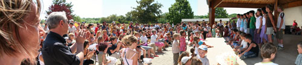
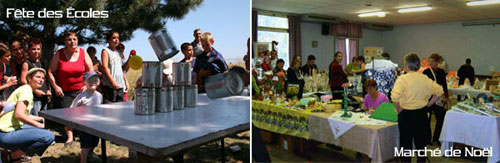

Graine de Canailles
Graine de Canailles est l’association des Parents d’élèves de l’école élémentaire de Bressey sur Tille.
Cette association organise des fêtes destinées aux enfants à l’occasion de Noël ou encore de Carnaval.
Elle prête son concours à la mise en place des fêtes scolaires et est à l’origine de différentes manifestations (loto – vide grenier -marché de Noël) qui permettent d’animer le village de Bressey.
Les bénéfices de ces manifestations sont redistribués aux écoles pour financer des sorties et du matériel pédagogique.